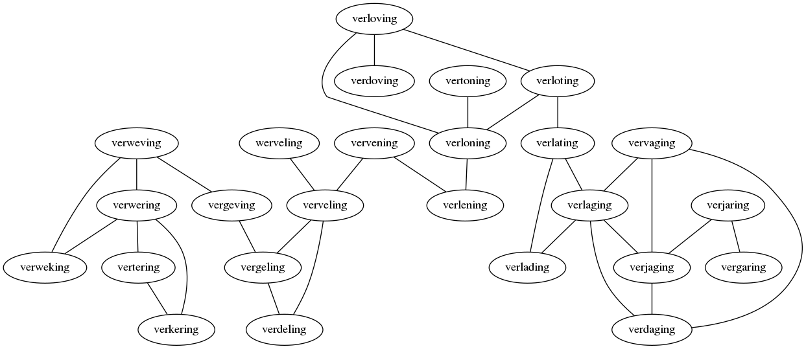

Een taalspelletje uitgevonden door Lewis Carroll verdient natuurlijk de aandacht. In de basis is het spel simpel. Neem twee woorden van gelijke lengte en kijk of je van de één naar de ander kan komen door steeds maar één letter te veranderen. Na elke verandering moet je nog steeds een valide woord hebben.
Zo kun van hier naar daar komen op de volgende manier
Langere woorden zijn moeilijker
Het doel is over het algemeen om het in zo'n klein mogelijk aantal stappen te doen. Als je dit aan het oplossen bent maak je een soort van boom van mogelijke woorden. Elk woord is zo verbonden met een aantal andere woorden waarin het kan veranderen. Als we tussen alle woorden die maar één letter verschillen een lijntje zetten krijgen we een graaf. Hier is hoe dat process er uit ziet.

We kunnen alle woorden van gelijke lengte in een gigantische graaf zetten. Dan zullen we eilandjes vinden van onderling bereikbare woorden. Ieder eilandje heet een component. Als je dus twee woorden hebt die bij een andere eiland horen, kun je nooit van de één naar de ander.
De meeste woorden, vooral als ze lang zijn, hebben helemaal geen verbindingen en zitten in hun eentje op hun eigen eiland. Dit betekend dat 85% helemaal niet mee doet. Dit is mede de reden dat lange woorden zoveel moeilijker zijn, grote kans dat je een begin of eindwoord kiest wat effectief een eiland is. Omgekeerd zijn de eilanden van korte woorden spinnewebben met als record houder bok, een woord met dertig verbindingen!
dok, fok, gok, hok, jok, kok, lok, mok, nok, ook, pok, rok, sok, tok, wok, bol, bak, bek, bik, boa, bod, boe, bof, bog, bom, bon, bos, bot, box of boy
Misschien een beetje een afleiding, maar wat is het langste pad wat we kunnen maken? Een pad zal zich altijd volledig op één component moeten bevinden. En je kunt bijna alle woorden binnen zo'n component bezoeken in één tour, zelfs als je geen dubbele toelaat. Er zijn componenten in alle soorten en maten maar er zijn 3 duidelijk grootste. 1356 onderling verbonden 5-letterwoorden waaronder koest en draai. 1665 onderling verbonden 6-letterwoorden waaronder wettig en pompen. En maarliesft 1755 onderling verbonden 4-letterwoorden waaronder hond en kauw.
Het langst mogelijk pad is dus meer dan 1500 woorden lang (beetje afhankelijk van je woordenboek). Watt, want, wang, zang, … nog 1500 4 letter woorden …, logo
Maar de hoofdvraag is dus eigenlijk: Welke twee woorden woorden vereisen het langste pad als je de kortste route neemt? Dit zijn wellicht goede woorden als je iemand een puzzel wilt geven. Voor iedere woordenlengte zijn dit de reeksen.
20: aria alia alfa asfa asla aula aura jura jurk junk dunk donk doek soek stek sten eten even oven omen amen 37: trust frust fruit fluit sluit stuit stuip stulp stolp stoep stoer stier slier klier kuier luier luien buien buten baten bazen bazin bazig bezig benig menig menie manie malie talie taaie laaie larie larve garve garde aarde aards 23: dromer droger drager dragen dralen kralen kraken kwaken kweken kieken kiezen kiezel miezel moezel boezel boemel bommel bombel bobbel bobben jobben jobber robber rubber 41: kluiver kluiven kluizen sluizen sluiten stuiten stutten statten spatten spitten spijten slijten slijpen slippen stippen stoppen stoepen snoepen snoeren snieren slieren klieren kuieren kuberen puberen pureren pareren paneren poneren doneren doteren boteren beteren begeren regeren regelen zegelen zemelen hemelen hevelen bevelen bedelen 13: verrader verlader verladen verlagen vervagen vervalen vervelen vergelen mergelen mengelen bengelen beugelen beuzelen neuzelen
De perfecte oplossing is er één waarbij je elke letter verandered, één voor één, op volgorde. Hoe langer het woord, hoe onwaarschijnlijker dat wordt.
En ik kan misschien één langer met 8-letter woorden:
Gondelen is varen met en gondel (in Venetië), en vondelen is lopen over een vondel, of wellicht het te vondel leggen van baby. Die laatste is redelijk creatief. Vendel is synoniem met vaandel.
Mocht je je nog afvragen of er iets zinnigs gezegd kan worden in deze vorm
Poets koets, klets klats, Klaas klaar!
kutzoot, kutzoat, kutzmat, kutomat, kuromat en ktromat zijn geen woorden
Ah juist :'). Dat is een stuk simpeler. Ik ga het proberen in vogelvlucht te doen. Allereerst samenstellingen.
De regel is over het algemeen dat het laatste woord van een samenstelling een zelfstandig naamwoord moet zijn. 2 zelfstandige naamwoorden is dan het meest simpel zoals auto/merk.
Je mag dan altijd een streepje vrij gebruiken als je bang bent dat het anders niet goed leesbaar is, bij sommige woorden is dit ingeburgerd als normaal zoals in kabel-tv.
Soms zit er nog iets tussen de woorden in, je kan 'en' gebruiken als meervoudsvorm, toets/en/bord. Of s voor bezittelijk koning/s/dag. Of een -e- om de uitspraak beter te laten lopen: haai/e/tand.
In het Nederlands koppelen we altijd zn.'en aan elkaar.
Naast zn./zn. kun je dus ook ww./zn. gebruiken loop/route, drink/e/broer let hier op dat ik loop routes dus iets anders betekend dan de looproutes. Door een samenstelling te maken wordt het geheel een zn. met grofweg de betekenis de zn. waar je ww. looproute, de route waar loopt.
bn./zn. (en vele andere vormen) bestaan in het Nederlands wel maar alleen in vaste vorm, hier moet dus in principe bij nieuwe gevallen een spatie tussen (zie hier een lijst)
Ok dan 'vervoegingen' in principe mag je elk woord wat je maar wilt als werkwoord vervoegen, ik duin jij duint en wij hebben geduind. Gewoon volgens de normale regels. En dit geld ook voor veel andere morfologische transformaties zoals '-ig', kastig, boekig, konijnig of on- onboekige onautoloosachtige. on- -ig -ige -loos en -achtige zijn allemaal voorbeelden van actieve morfologie, die mag je helemaal vrij toepassen op nieuwe manieren. De betekenis die zo'n woord krijgt kan ambigu zijn "on[autoloos]" betekend vermoedelijk dat je wel een auto hebt [onauto]loos zal door de meeste mensen gelezen worden als het niet hebben van een onauto (een slechte auto).
Allemaal nog een beetje kort door de bocht, we hebben nog niet over samengestelde werkwoorden gehad, maar er zwerven vast taalkundige rond die hier van alles en nog wat aan gaan toevoegen.
Ja dat is de heilige graal! Maar goed er zijn wel wat metrieken. Allereerst is er natuurlijk "staat dit woord in een woordenboek", ANW is vrij beschikbaar maar https://nl.wiktionary.org heeft ook heel veel woorden en ook zeer volledige inflecties: https://nl.wiktionary.org/wiki/updaten/vervoeging
Als 2de heb natuurlijk gigantische datasets van tekst tegenwoordig (commoncrawl bijv. kun je downloaden) daarin kun je de frequentie van je woord bekijken en als deze voldoende hoog is dat een aardig sterk signaal. Een hele grove indicatie hiervan is gewoon aantal resultaten uit google.
Het ontbinden van samenstellingen en onbekende inflecties kan ook, je hebt MBMA een "morphological analyzer", het makkelijkst is om frog te downloaden waarin je dit direct kan doen voor NL. Maar dit is verre van perfect voor hele lange en complexere woorden. En je weet na de opdeling nog niet hoe redelijk de samenstelling is "matrozenkookstelletje" kan misschien prima maar "koekenpanvliegtuigschuimhoudertje" is echt niks zinnigs.
Daarvoor moet je dus ook nog de (wellicht verkeerd) ontbonden componenten aan elkaar kunnen relateren, de normale methode is doormiddel van een 'perplexity' graadmeter. Dus je neemt een mooie set van correct ontbonden woorden, kijkt hoe vaak 'koeken' naast 'pan' staat en 'pan' naast 'vlieg' etc en ook 'koekenpan' naast 'vliegtuig' en als dat vaak is zeg je 'deze is wel ok' en zo niet dan zal het wel onzin zijn.
Echter werkt dat heel redelijk voor zinnen maar best slecht voor woorden omdat er gewoon niet zoveel voorbeelden zijn, er zijn talloze redelijke samenstellingen die echt nog nooit gebruikt zijn, terwijl bijna alle 2 mogelijke aangrenzende woorden in een zin ook wel ergens staan.
Dus al met al nog niet zo makkelijk, als je wilt kan ik nog even verder lulllen over hoe met een complexere metriek dan 'perplexity' rondom bigrammen het wel beter kunnen doen maar nog niet perfect.
Zoals het commentaar hieronder, programmeren helpt. Het kost dan niet minder tijd maar je kunt op hoger abstractie niveau het probleem aanvliegen en toffere dingen doen. En programmeren kun je zeker leren.
Maar veel begint gewoon op papier, dus bijvoorbeeld hier begint het met woorden vinden die 1 letter verschillen en die aan elkaar knopen in een graaf. En dan merk je, dat is heel makkelijk. Dus ga je iets extra beperkingen opleggen, zoals elke letter op volgorde wijzigen. Net zo lang tot dat het maar nét kan. en dan heb je een mooie vorm.
Als je dit met pen en papier zou doen ga je dus gewoon beginnen met een woord, en alle woorden die de eerste letter anders hebben eronder schrijven, ieder van die woorden hebben weer een opvolgende optie en zo verder. Je krijgt als je dat meer doet gevoel bij welke letters op welke plekken prettig zijn. De 'en' aan het eind van floepen en 'str' aan het begin van stromat zijn al heel snel een gegeven (want s, st, str mogen allemaal als begin van een woord, en er kan van alles op volgen, handig). Dan zoek je een of ander ding online om woorden met bepaalde patronen te vinden en kun je een heel eind komen.
Lees ook is Battus z'n opperlans voor inspiratie, hij geeft daar ook nog heel veel open problemen die vooral veel handwerk vereisen, computers kunnen nog niet alles, en waarschijnlijk heb je zelf ook wel nieuwe ideeën als je dat aan het lezen bent.
Ah ik snap denk punt 1 nu, je bedoeld het proces in zijn geheel herhalen met het laatste woord! Dat is een heel leuk idee, hier met 4 letterwoorden 3 keer door de hele diagonaal heen:
iaat baat beat beet been heen hoen hoon hoos voos vlos vlas vlag slag stag stug stuf
vijfletterwoorden 2 maal doen is meteen al heel lastig merk ik, als je eenmaal één keer extra kan bestaat de kans natuurlijk al redelijk snel dat je dan nog een keer kan, over het algemeen zijn 'beginwoorden' slechte 'eindwoorden' dus als het blijkt dat je genoeg keuze hebt dat je die aan elkaar kan knopen zijn er ook wel oplossingen waarin dat heel vaak gebeurd. Dus van vierletterwoorden kun je nog een veel langere keten maken maar een 2*5 letter diagonaal maken is meteen moeilijk.
Punt 1 snap ik niet, als je opvolgende letters moet vervangen is het aantal stappen altijd gewoon de woordlengte. Als je een willekeurige letter mag vervangen en nooit dubbele wilt is het antwoord: watt > want > wang > zang > zeng > zeug > zeur > zuur > vuur > puur > peur > peut > teut > tuut > tuit > tuin > tuil > zuil > …(nog 1500 4 letter woorden)… > logo
Punt 2, zoals in aktes -> bluft? Of mag ik stapsgewijs 1 letter vaker veranderen dan een ander?
Punt 3: -er > -en of -ere > -ers is wel productief en dan is de vraag wat telt. Bakker/bakken boordbakker/broodbakken speltbroodbakker/speltbroodbakken zuurdesemspeltbroodbakken/.. je snapt het
Zie ook alle items op http://home.wxs.nl/~avdw3b/home.html onder het kopje 'letters'. En je kunt natuurlijk mijn oude posts terugkijken.
De nieuwe versie is een stuk vollediger!
Goede uitleg, en inderdaad nodig het zo aan te pakken als je de wat complexere (en interessantere) vragen uit deze draad wilt beantwoorden!
Geautomatiseerd, ik reduceer al dit soort dingen naar een soort van 'topologiën' waarin elke mogelijk unieke letter een waarde krijgt en je kan dan beschrijven welke waardes samen een woord moeten vormen, bijvoorbeeld de vorm hier boven voor een 4 letterwoord schrijf je zo op:
0, 1, 2, 3
4, 1, 2, 3
4, 5, 2, 3
4, 5, 6, 3
4, 5, 6, 7
Je kunt dus zien dat er 5 woorden zijn, en dat bijvoorbeeld woord 2 en 3 dezelfde begin letter moeten hebben (en dezelfde 2 eindletters). Je kunt zo ook woordvierkanten, of hexagons, of kubussen of niet euclidaanse dingen. Wat je wilt. En ik heb een programma gemaakt wat oplossingen zoek.
De uitdaging is vooral het samenstellen van goede woordenlijsten! Dat is best wel eens monnikenwerk.
Nederland heeft een rijke cultuur rondom dit soort taligheden al sinds de rederijkers enkele eeuwen terug. Dus daar bouw ik op voort, in de afgelopen decennia kun je bijvoorbeeld kijken naar Battus, Kees Torn, Drs. P, Aad van de Wetering, Piet Burger, Frank van Pamelen. En nog veel meer!
Opperlandse Taal & Letterkunde van Battus is leuk om mee te beginnen: https://www.dbnl.org/tekst/bran023oppe01_01/bran023oppe01_01_0003.php
Goede woordenlijsten samenstellen, dat is inderdaad de grote uitdaging voor dit soort spel automatiseren. Taal is heel flexibel en het is heel subtiel wat mensen een prima woord vinden en wat complete onzin is zeker als je ook wat context erbij bedenkt.
Als je veel (of juist heel weinig) edges hebt en niet een al te grote graaf (1500 nodes is best klein) dan is het nog best goed te doen.
Het antwoord op die vraag heb ik ook voor jou klaarliggen! voor elke woordlengte zelfs. Het antwoord is heel gevoelig voor woordenlijst natuurlijk, als je een extra woordje toevoegt ontstaat er heel snel een korter pad.
20: aria alia alfa asfa asla aula aura jura jurk junk dunk donk doek soek stek sten eten even oven omen amen
37: trust frust fruit fluit sluit stuit stuip stulp stolp stoep stoer stier slier klier kuier luier luien buien buten baten bazen bazin bazig bezig benig menig menie manie malie talie taaie laaie larie larve garve garde aarde aards
23: dromer droger drager dragen dralen kralen kraken kwaken kweken kieken kiezen kiezel miezel moezel boezel boemel bommel bombel bobbel bobben jobben jobber robber rubber
41: kluiver kluiven kluizen sluizen sluiten stuiten stutten statten spatten spitten spijten slijten slijpen slippen stippen stoppen stoepen snoepen snoeren snieren slieren klieren kuieren kuberen puberen pureren pareren paneren poneren doneren doteren boteren beteren begeren regeren regelen zegelen zemelen hemelen hevelen bevelen bedelen
13: verrader verlader verladen verlagen vervagen vervalen vervelen vergelen mergelen mengelen bengelen beugelen beuzelen neuzelen
Oeh leuke variatie! De langst mogelijk keten zonder dubbele was ook eerder een vraag (watt > want > wang > zang > zeng > zeug > zeur > zuur > vuur > puur > peur > peut > teut > tuut > tuit > tuin > tuil > zuil > …(nog 1500 4 letter woorden)… > logo) dat is nagenoeg gewoon de grote van de grootste component in je graaf gezien bij korte woorden deze best goed verbonden is.
En ik kan misschien één langer met 8-letter woorden:
gondelen
vondelen
vendelen
verdelen
vervelen
vervalen
vervagen
Gondelen is varen met en gondel (in Venetië), en vondelen is lopen over een vondel, of wellicht het te vondel leggen van baby. Die laatste is redelijk creatief. https://nl.wiktionary.org/wiki/vendelen is gewoon Nederlands maar zal niet iedereen kennen.
Die lengte 8 woorden met willekeurige letters vervangen kan nog een stuk langer lijkt me, dat houdt niet echt op, na verpozen, verkozen, herkozen, ... etc.
Zowel een zn. als ww. eg: "We floepen uit de waterglijbaan"
Nice! Ik had gehoopt dat deze uitdaging mensen een beetje zou prikkelen, je kunt als je zelf samenstellingen gaat maken oneindig door zelfs! Maar je hebt het aardig verpest :'), mooi resultaat!
Een andere bekende vorm in dit genre is de zandloper, wellicht kunnen jullie een langere maken:
mediërender mediërende mediërend mediëren meiëren mieren meren meen mee me men omen romen roemen roemeen roemeens roemeense roemeenser roemeensere Ja als je maar woorden wilt van lengte 6 is de keuze reuze, maar wat betreft lengte 7 hebben we in de Nederlandse taal hier flink geluk mee! 8 is nagenoeg hopeloos, zeker zo'n schone, maar zeg nooit nooit!
Ok ik denk dat dit ongeveer het maximaal haalbare is.
Het enige waar ik nog naar tuur: ster.
Omringt door deur, muur, wal.
Oh zo ontzettend meur/stink.
Kan niet zwemmen in iets wat op een meer leek
Ja dat is wat ik meen Mien
Zo sinds corona: Waar ik naar...
tuur: muur, meur meer, meen
... het echt.
Deze is wel lastig...
het, ook al is het *glad*, slik. Ja ik heb dit rode *blad* lief Je snel terwijl ik *baad* beet Is een tractor z'n *band* taaier? De lange bergroute *bang* af reed
En, je wordt er niet veel wijzer van maar hier kun je wellicht een verhaal omheen verzinnen.
glad blad baad, band bang.
(1 korte reactie(s) weggelaten)